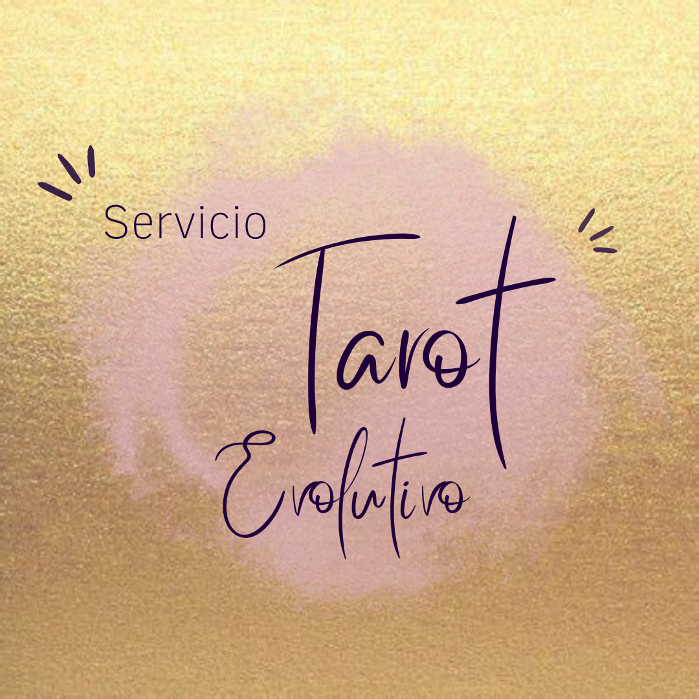
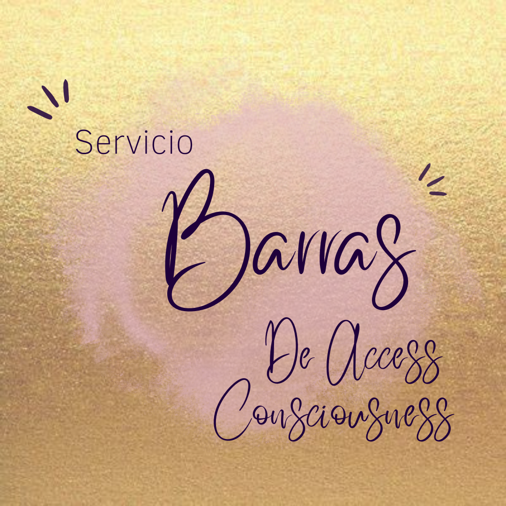
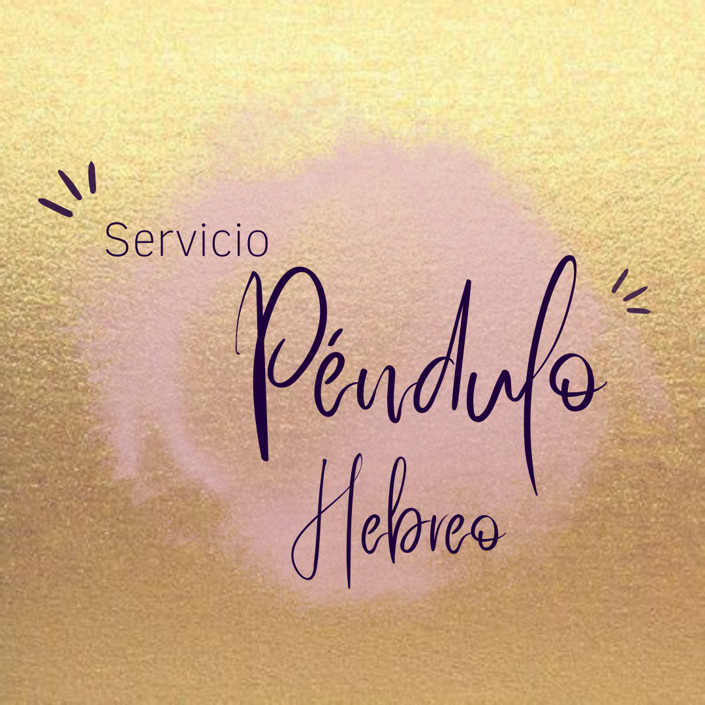
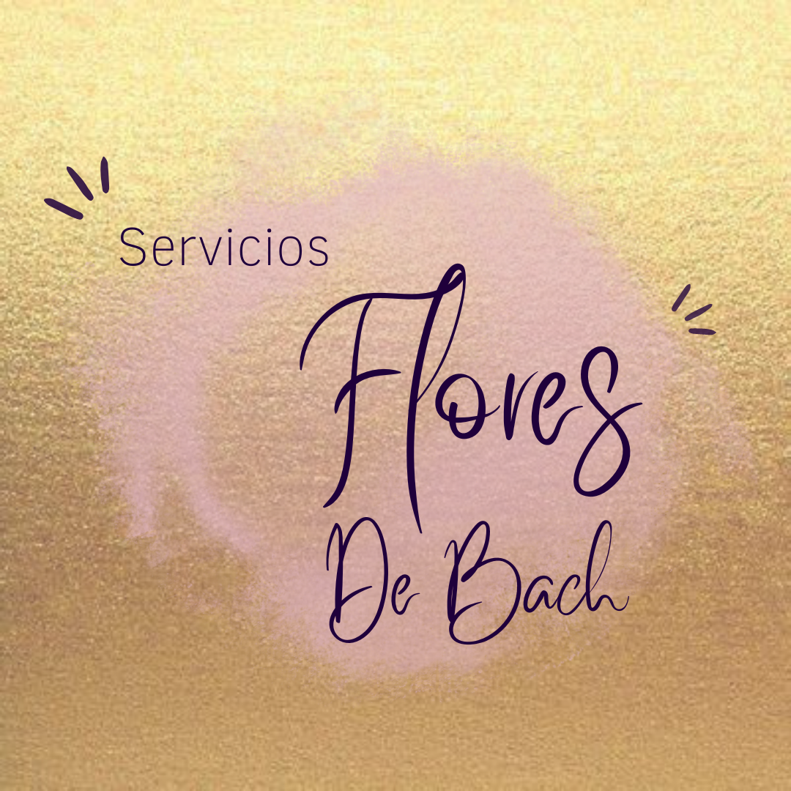
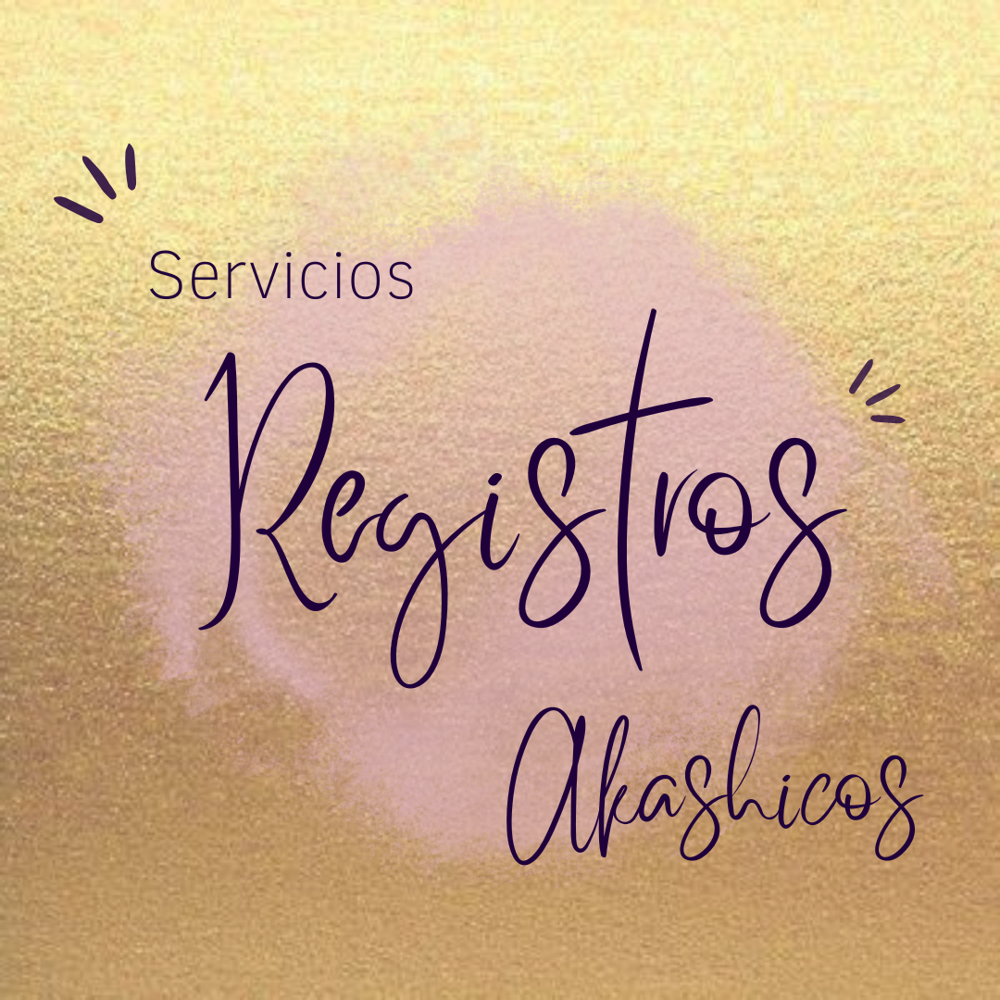
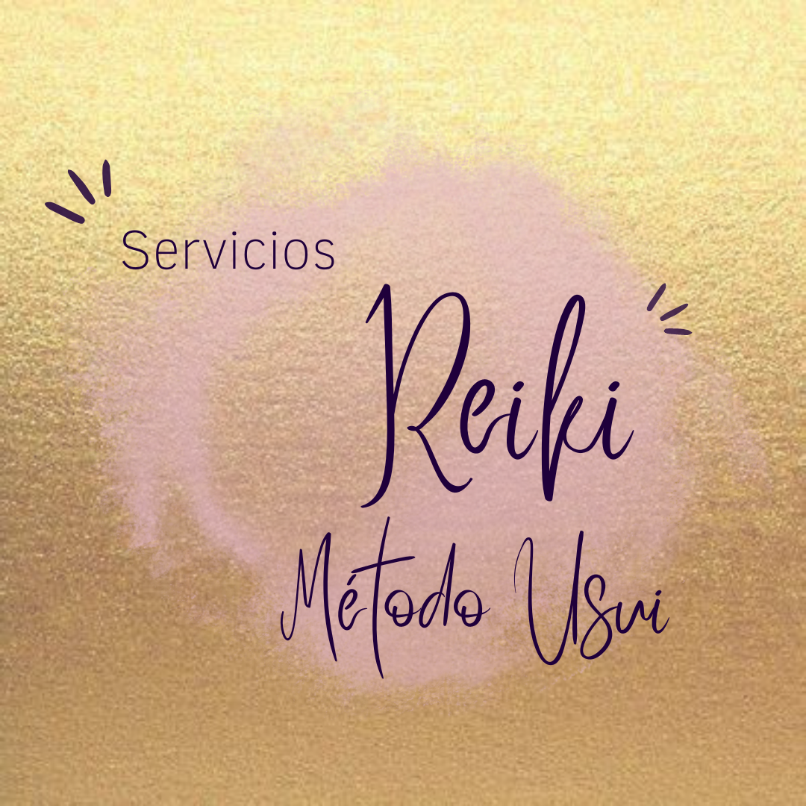
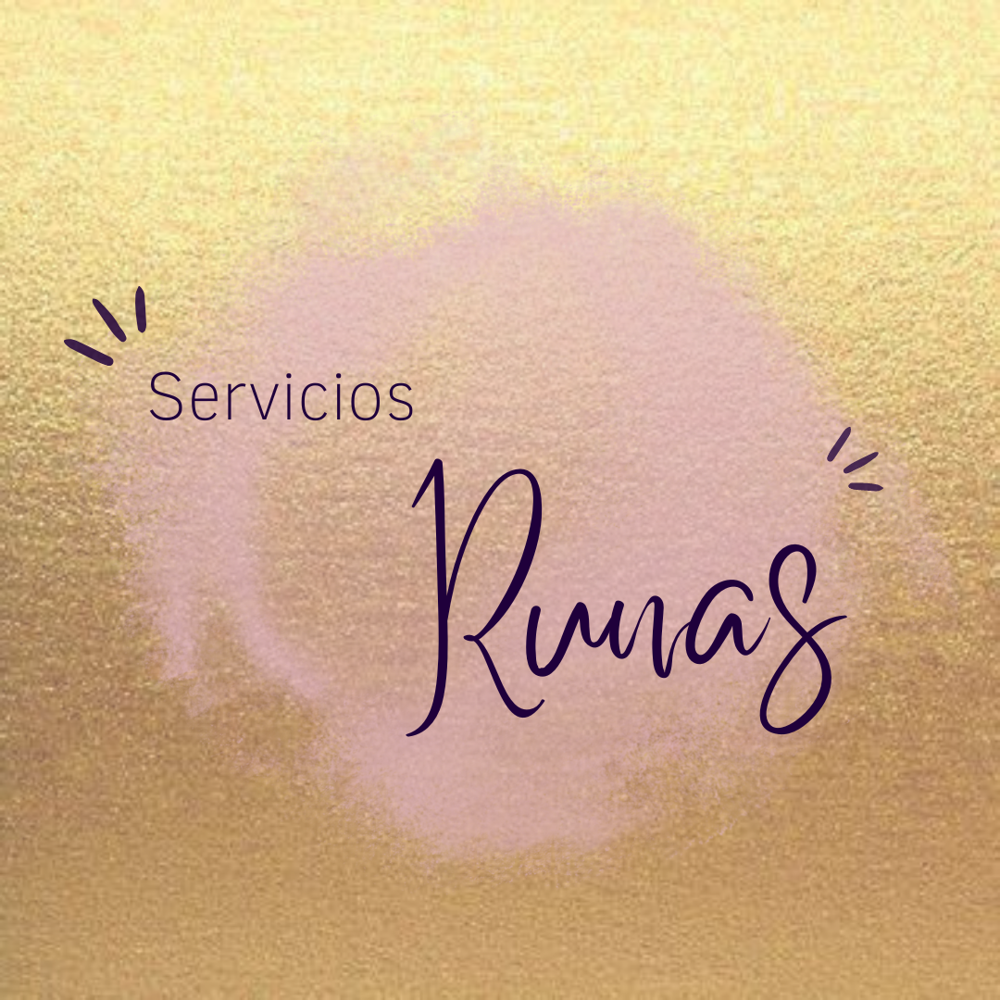

Tarot
El tarot funciona como un consejero que canaliza los mensajes de las artes mágicas. El revela lo que está oculto en el pasado, presente y futuro. Es una puerta qué te acerca a tu destino. Se trata de una tradición ancestral que se ha mantenido en el tiempo. Muchas personas lo utilizan como un guía.

Barras
Las Barras de Access es una herramienta para liberarte de conflictos, bloqueos y creencias arraigadas que nos impiden avanzar y lograr nuestras metas. Es un proceso en el cual se activan 32 puntos energéticos situados en la cabeza llamados barras, que al tocarlos liberan la mente y la conciencia de ideas, inquietudes y juicios que nos limitan. Contienen información sobre lo que estás creando en cualquier área de tu vida: dinero, creatividad, salud, relaciones y sentimientos. El contacto con las barras, disipa la carga electromagnética de los pensamientos y emociones, permitiendo percibir tu vida, tu cuerpo y tus relaciones con mayor claridad.

Péndulo Hebreo
El péndulo hebreo es tiene la facilidad de detectar todo tipo de “problemas” de nuestro ser y tiene la capacidad de sanarlos desde la raíz. Si nos corresponde, puede eliminar o aliviar situaciones kármicas generadas en esta o en vidas pasadas, también puede ayudarnos a eliminar todo tipo de mal de ojo, brujería, expulsar desencarnados, reparar nuestro campo áurico, entre otros.

Flores de Bach
Las Flores de Bachson una terapia floral perteneciente a la medicina alternativa. Esta terapia se realiza a partir de esencias o tinturas naturales realizadas con flores o productos naturales específicos que ayudan a mejorar las situaciones emocionales de las personas.

Registros akáshicos
Los registros akáshicos son una memoria universal de la existencia, un espacio multidimensional dónde se archivan todas las experiencias del alma incluyendo todos los conocimientos y las experiencias de las vidas pasadas, la vida presente y las potencialidades futuras.

Reiki
El Reiki es un tipo de medicina alternativa japonesa considerada como pseudoterapia englobada dentro de las terapias de energía. Sus practicantes utilizan la imposición de manos o el toque terapéutico para desde las palmas transferir una energía universal hacia el paciente con el fin de promover la curación emocional o física.

Runas
Las runas son un conjunto de símbolos que forman un alfabeto. Una de sus principales características es que están escritas en un soporte habitualmente de piedra o madera. Estos carácteres fueron utilizados por primera vez por los germánicos alrededor del año 100 a.c (Norte de Europa). Según la tradición, a cada símbolo se le asigna un nombre y representa algun tipo de poder esotérico y de adivinación.